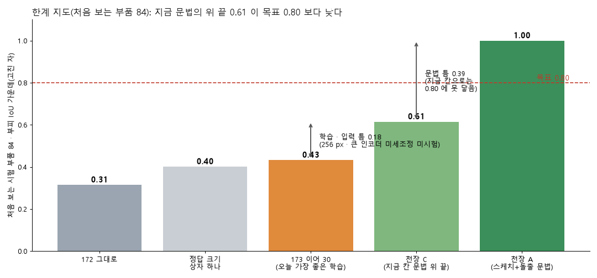

실험 m2_tr0177_h000_원인찾기
177 원인 찾기 — 자료도 학습량도 아니면 무엇이 막나 (11-09 · 스크래치 탐침 다섯 · 손으로 정리)
분석
한 줄로
물음: 양 · 학습량 · loss · 섞기가 다 손잡이가 아니었다. 인코더 · 정답 · 입력 해상도 · 자 중 무엇이 0.50 을 막나?
답: 넷 다 주범이 아니었다. 막는 것은 문법이다. 처음 보는 시험 84 에서 지금 칸 문법으로 옮긴 정답 자체의 천장이 0.61 로, 목표 0.80 보다 낮다.
왜 이 판을 했나
172~177 에서 학습 쪽 손잡이를 다 돌렸는데 시험 0.47 근처에 멈췄다. 사용자: 「현재 모델 구조에서 각 컴포넌트마다 원인을 찾아야겠네?」 · 정답이 문제라는 가설은 「무조건 맞는 게 아니라」 검사하라고 했다.
바꾼 것 하나
학습 없음. 다섯 검사를 미리 적은 판정으로 돌렸다.
- 쌍둥이: 시험 그림이 학습에 그대로 있나
- 인코더: 종류 · 몸 수를 선형 탐침으로 꺼냄(작은 CNN 대 DINOv2 = 큰 사전학습 인코더)
- 정답 애매함: 거의 같은 그림인데 몸 수가 다른 짝이 정말 같은 모양인가
- 입력 해상도: 같은 모양 · 다른 모양 짝을 32~256 px 그림 거리로 가르는 정도(AUC)
- 자: 실제 CAD 메시가 물샐틈이 없어 정답 부피가 틀리나
결과

| 처음 보는 시험 84 | 172 | 상자 하나 | 173 이어 | 천장 C(지금 칸) | 천장 A(스케치 + 돌출) |
|---|---|---|---|---|---|
| 부피 IoU 가운데 | 0.31 | 0.40 | 0.43 | 0.61 | 1.00 |
왜 이렇게 나왔나
확인한 것
- 쌍둥이: 시험 100 중 16 개가 학습에 있는 그림이었다. 173 이어는 쌍둥이 0.873 · 나머지 84 는 0.432. 이후 84 로 따로 적는다.
- 인코더: 가장 큰 몸 종류는 모델이 시험에서 0.938 맞힌다(가장 흔한 값만 찍기 0.656). DINOv2 탐침도 0.927~0.938 로 같다. 몸 수는 DINOv2 탐침 0.69~0.70 · 모델 0.771. 큰 인코더가 더 읽지 못한다.
- 정답 애매함: 거의 같은 그림 짝 2,870 중 몸 수가 다른 것 497 · 그 모양 IoU 가운데 0.49. 같은 모양(≥ 0.9)은 19 %(전체 짝의 3 %). 나머지는 실제로 두께 · 속 빔이 달랐다. 가설 약함.
- 입력 해상도: AUC 32 · 64 · 128 · 256 px = 0.747 · 0.756 · 0.744 · 0.744 로 평평. 판정선(256 − 128 ≥ 0.05) 못 넘음.
- 자: 실제 CAD 메시는 100 개 다 물샐틈이 있어 9 개 정답 부피가 틀렸다. 꼭짓점 합치고 광선 7 개 다수결로 고쳤다. 가운데값은 그대로(상자 0.437 → 0.444).
짐작 (아직 확인 안 함)
- 학습 · 입력 틈(0.43 → 0.61)은 256 px 입력이나 큰 인코더 미세조정으로 줄 수 있다. 시험 안 함.
한계
- 치수 탐침은 결론 못 냄(선형 탐침 8~12 px 대 모델 2.2 px — 탐침이 너무 약함).
- 해상도 검사는 무딘 도구다.
- 처음에 사용자 가설(정답 탓)에 근거 없이 동의했다가 지적받고 검사했다. 「애매함 11~24 %」라고 한 것도 32 px 비교로 부풀린 숫자였다(내 실수).
배운 것과 다음
문제가 아니라 한계다 — 지금 칸 문법으로는 정답을 그대로 써도 0.80 에 못 닿는다.
- 문법을 넓힌다: 스케치 + 돌출 쪽으로 · 출력이 짧은 것부터 천장을 잰다 → tr178.